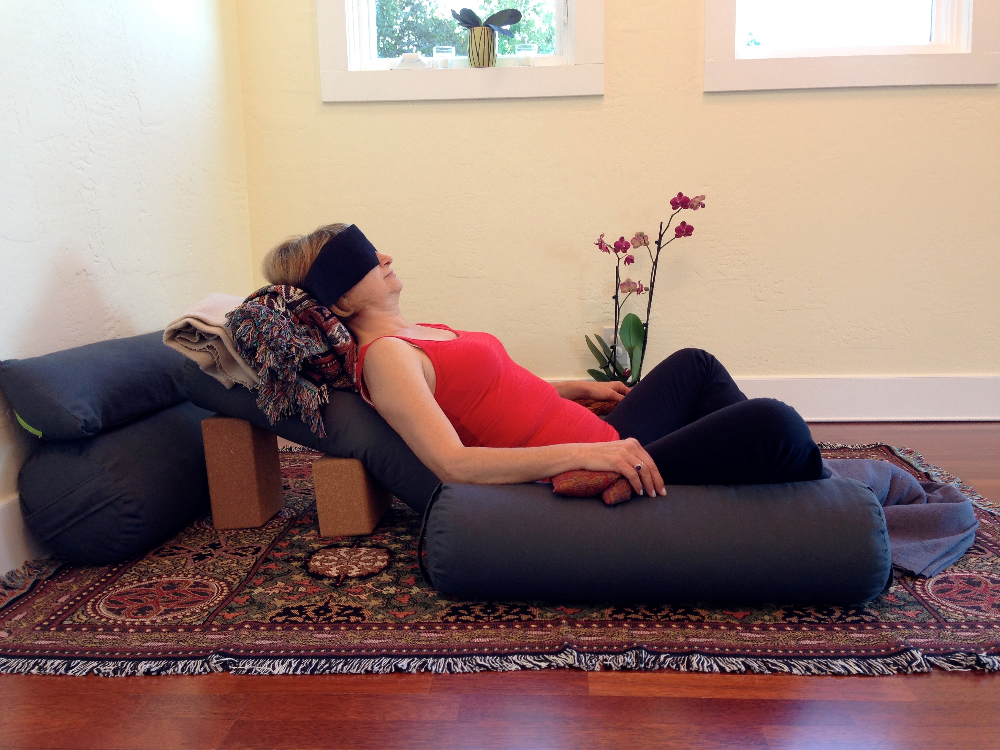

Classes
I offer two different classes weekly at the Osher Marin JCC, Restorative Yoga and Gentle Yoga:
Gentle Yoga: Class begins in a restorative pose allowing the body to deeply relax. Pranayama is used to establish the breath and clam the mind. Warming up, we begin a moving meditation of gentle asanas to move prana, or life force throughout the body, and awaken the abdominal core. Yogic philosophy is woven thoughout the class. We end in Shavassana with a final meditation. All levels and beginners are welcome.

Restorative Yoga: This is a theraputic class desgined to bring deep relaxation and healing to mind, body, and spirit. Inner balance and peace are restored by using yogic techniques of breath work, visualization, and meditation. This is not a movement class and may be completed in a chair if desired. All levels and beginners are welcome.
Classes are tought at the Osher Marin JCC
Monday 11:10am - 12:10pm Gentle Yoga
Thursday 5:00pm - 6:00pm Restorative Yoga
Sunday 4:00pm - 5:00pm Restorative Yoga
Private Lesson
Private Gentle and Restorative sessions offered at your home in Marin County on Mondays and Fridays,
between 9:00 am - 5:00 pm.
$75.00 per hour.
Contact Jane to set up an appointment.